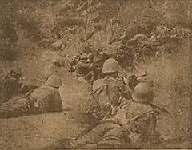

|
j
a v a s c r i p t |
November 26, 1944
Tribune: "Nippon Forces Occupy Nanning.... Last American Base in Southwest China Now in Japanese Hands." An embarrassed Chungking had nothing to say today.

Machine gunning, Leyte
"Fierce Fighting Rages in Northern Sectors of Leyte." Japanese planes attacked shipping in Leyte Gulf; the box score is now up to 400 vessels exactly! Page 2 details how the "death defying members of the anti-tank corps" destroy American tanks by hurling explosive charges at "vital parts." P-47s and Warhawks attacked a Japanese convoy bound for Leyte yesterday, sending 3 transports, an escort destroyer, and 3,500 Japanese to the bottom of the sea. A later communiqué referred to an attack off the northern tip of Cebu on another convoy bound for Ormoc. The score: Three transports sunk along with all their cargo and 2,000 Japanese troops; another transport was left blazing from "front to rear." The total of four convoys destroyed en route to Leyte is 16 ships and 14 destroyers or escorts, with 17,000 Japanese estimated to have drowned. |
|
|
|
|